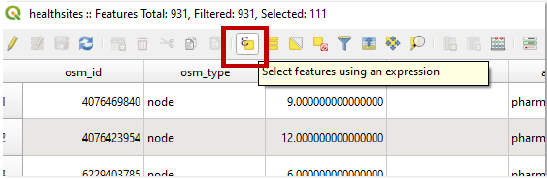

Non-Spatial Queries#
Manual selection#
Select the features manually in the attribute table by clicking on it.
Holding Ctrl while selecting features lets you select multiple features at once.
Example: Manually select countries with the attribute table
Select by expression#
The Select by Expression tool lets you build an expression to select features of a layer. For example, you can select specific attributes, or select features where the value of an attribute in a specific range.
Open the attribute table and select the
Select by Expression-tool.

The expression builder will open.

Comparison operators#
>,<,=,!=
Example: Select all cities with more than 20 million inhabitants in 2015: "2015" > 20000
Special operators#
LIKE
Example: Select all countries in Asia: "continent" LIKE 'asia'
Logical operators#
AND,ORCan be used to combine different queries or criteria.
Example: Cities, not having a population of one million inhabitants in 1950, had surged to over 10 million inhabitants by 2015: "1950" < 1000 AND "2015" > 10000
Complex Expressions#
It is also possible to add expressions that chain different requirements. In this case do not forget to put brackets around individual parts of the expression such as:
Save selected features as a new file#
Layer-Properties->Export->Save only selected features
Example: Export selected features as a new file
Select by expression options#
operator |
functionality |
|---|---|
|
addition |
|
subtraction |
|
multiplication |
|
division |
|
remainder of division |
operator |
functionality |
|---|---|
|
equals |
|
not equal |
|
less than |
|
greater than |
|
less than or equal to |
|
greater than or equal to |
Operators such as AND, OR can be used to combine different queries or criteria
operator |
functionality |
|---|---|
|
logical AND |
|
logical OR |
|
logical NOT |
operator |
functionality |
|---|---|
|
pattern matching |
|
checks if a value is in a list of values |
|
checks for null values |
|
checks if a value is within a specified range |
|
conditional expressions |
Further resources#
You can access information about logical operators in QGIS documentation through the following link.